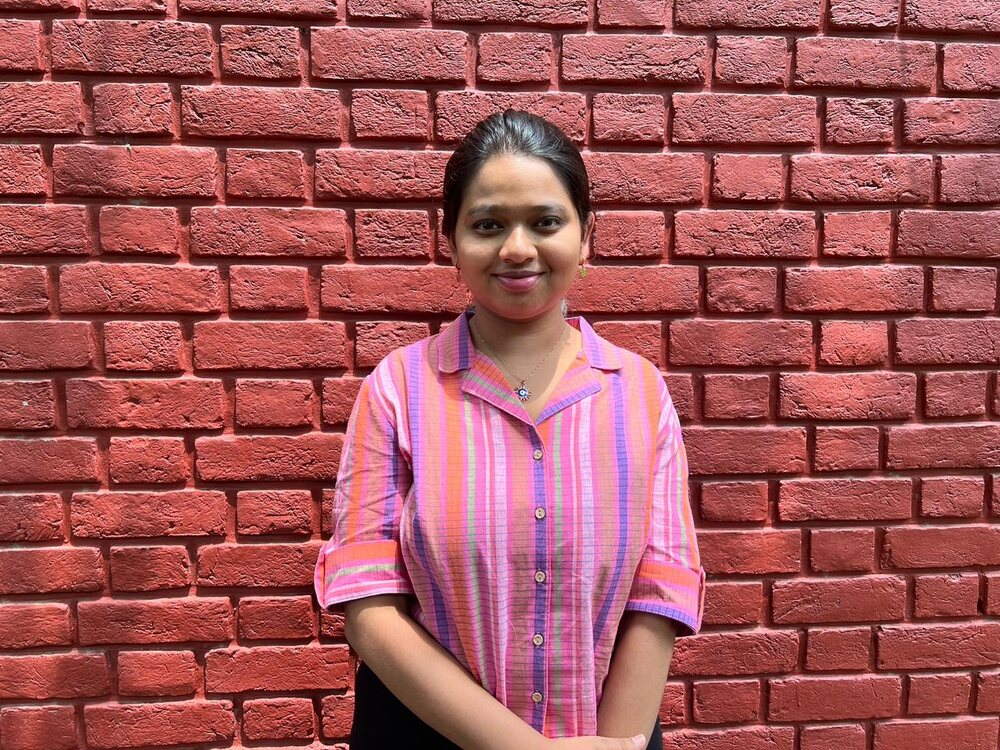
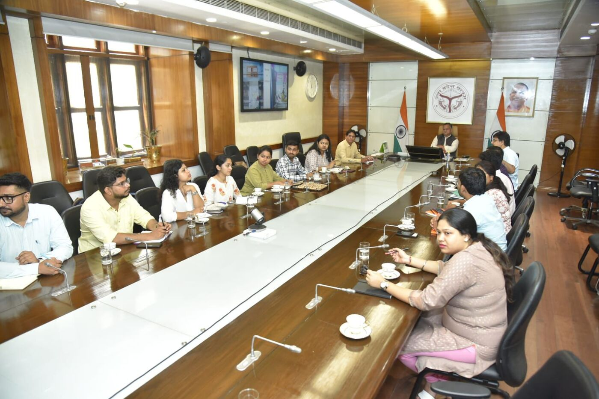
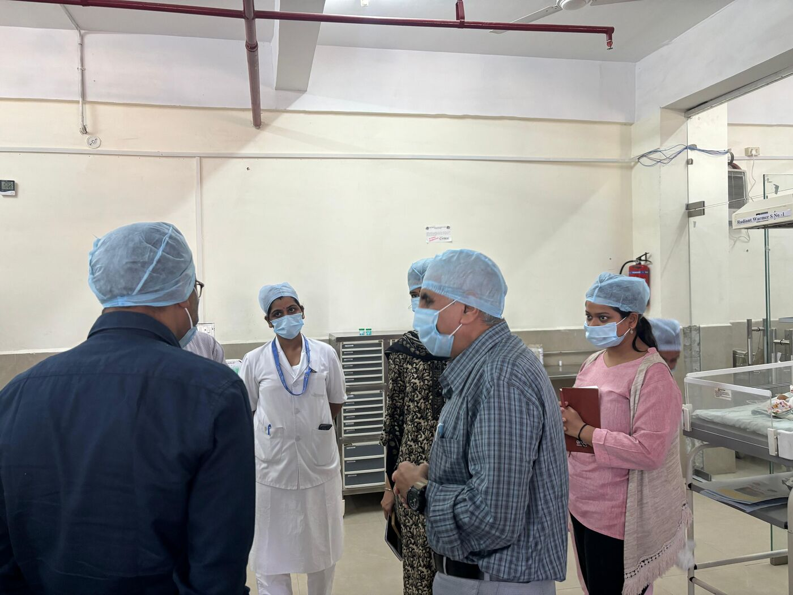
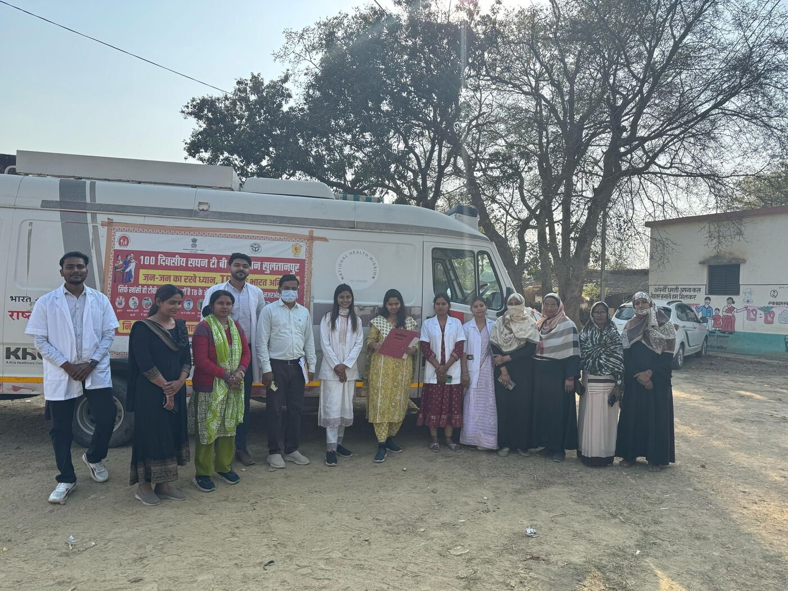
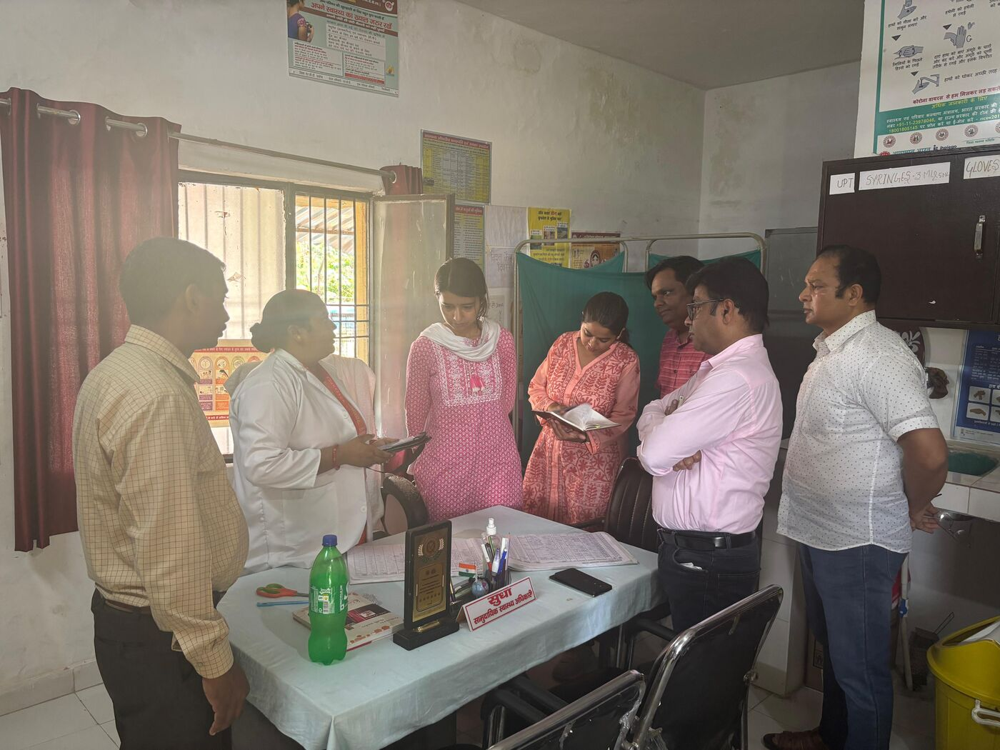
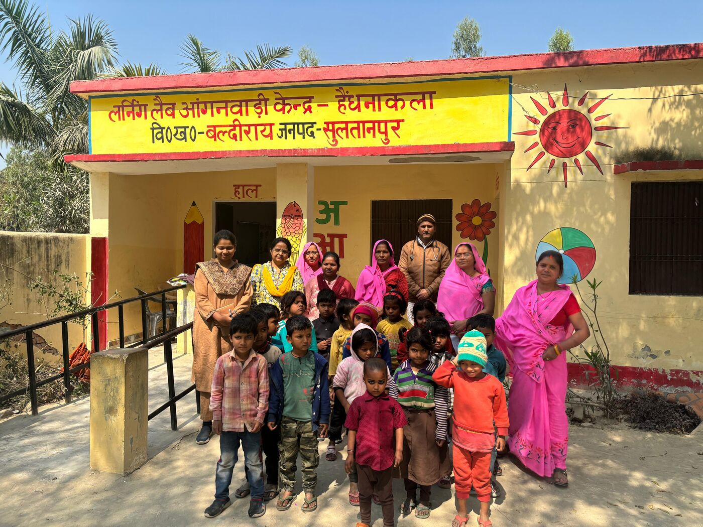
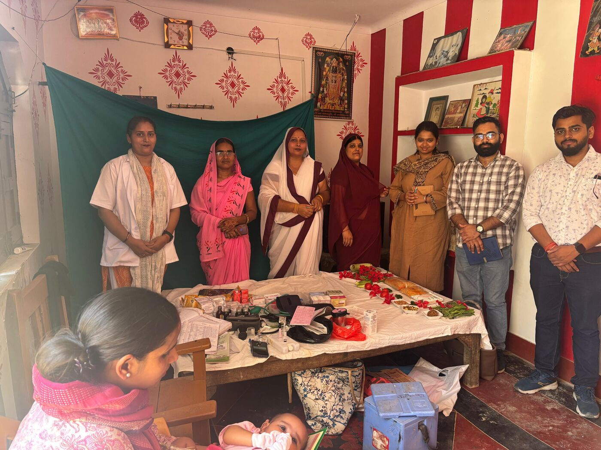
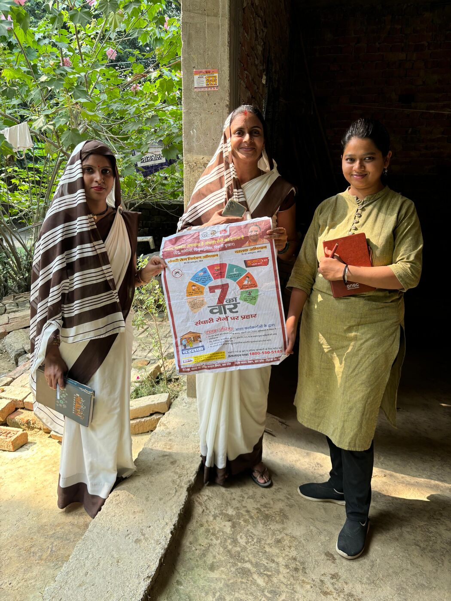
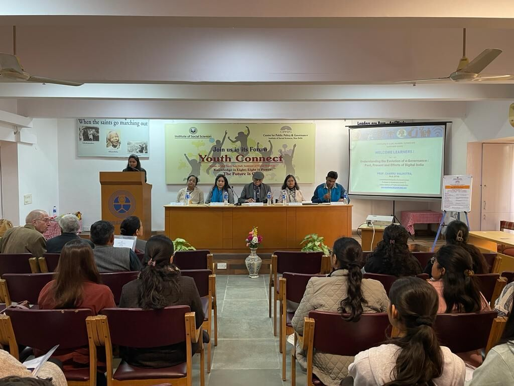

New Delhi · India
Sriya Rane
Public Policy Practitioner. Translating policy intent into last-mile impact

In the Field
Where policy meets the last mile.
A glimpse of the work of strengthening public systems across Uttar Pradesh.







